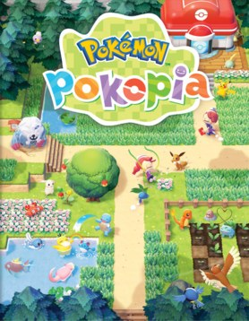
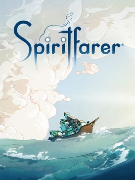

Simulation de vie et constructionPokémon Pokopia
Switch 2
Reconstruire un monde avec les Pokémon : régions, habitats, recettes et collections, Pass d'extension compris.
Interligne
Espacement des lettres
Police
Gestion et aventure cosy · 2020
Prendre soin des esprits avant de leur dire au revoir : toutes les régions, les quêtes, les recettes et les poissons.

Calculé à partir des cases que tu as cochées dans le guide, sur cet appareil.
Clique sur une partie pour l'ouvrir directement dans le guide. Les compteurs suivent les cases que tu coches.

Simulation de vie et constructionSwitch 2
Reconstruire un monde avec les Pokémon : régions, habitats, recettes et collections, Pass d'extension compris.